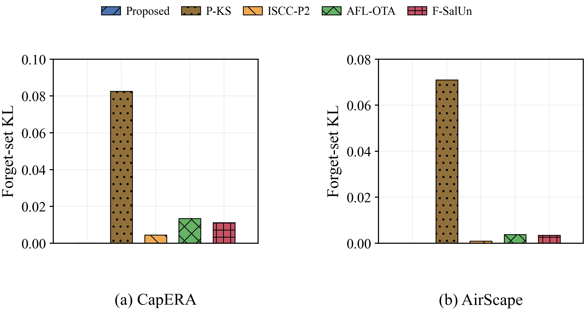
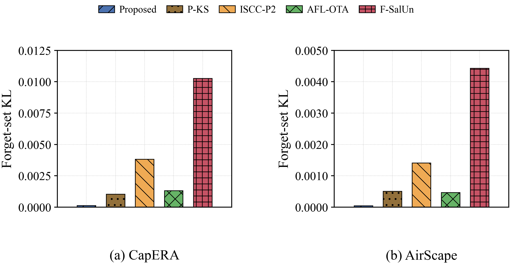
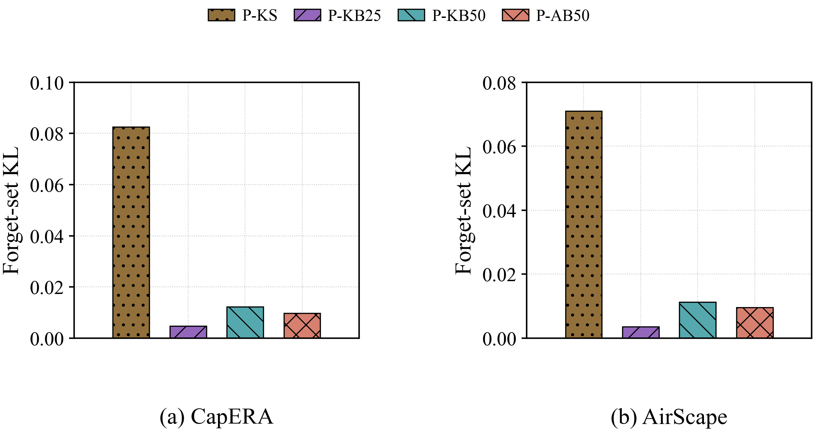
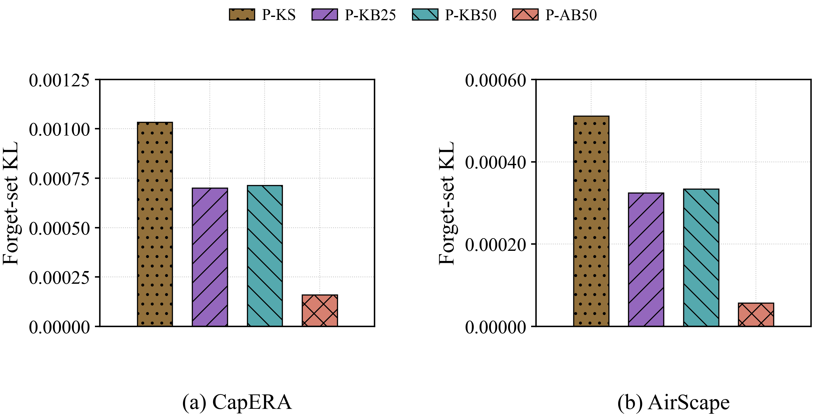
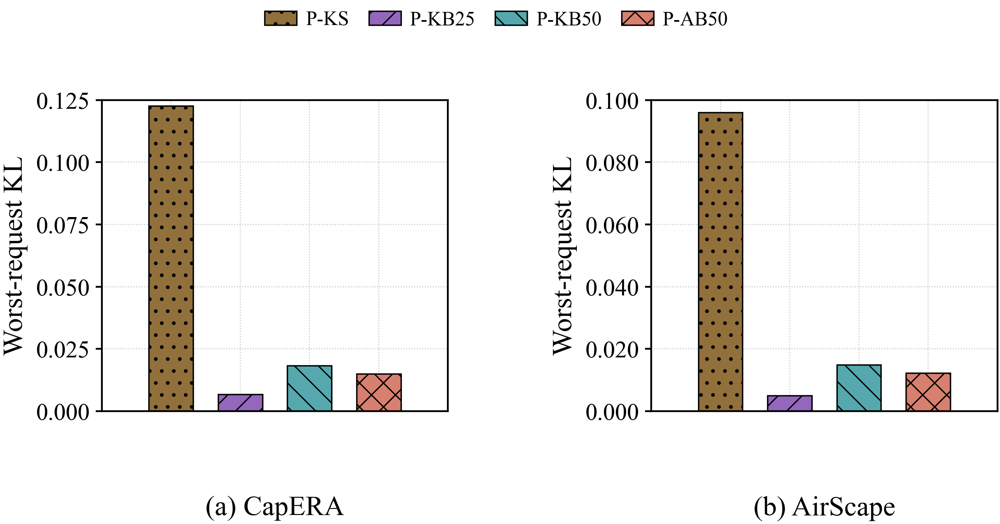
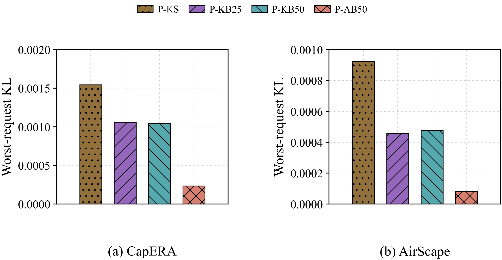
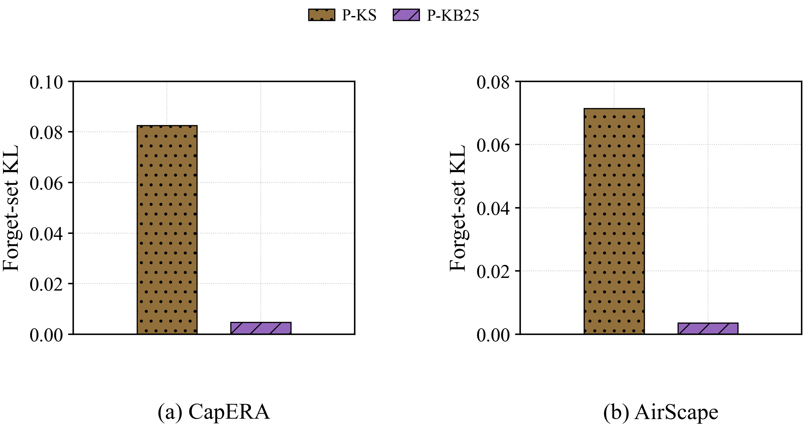
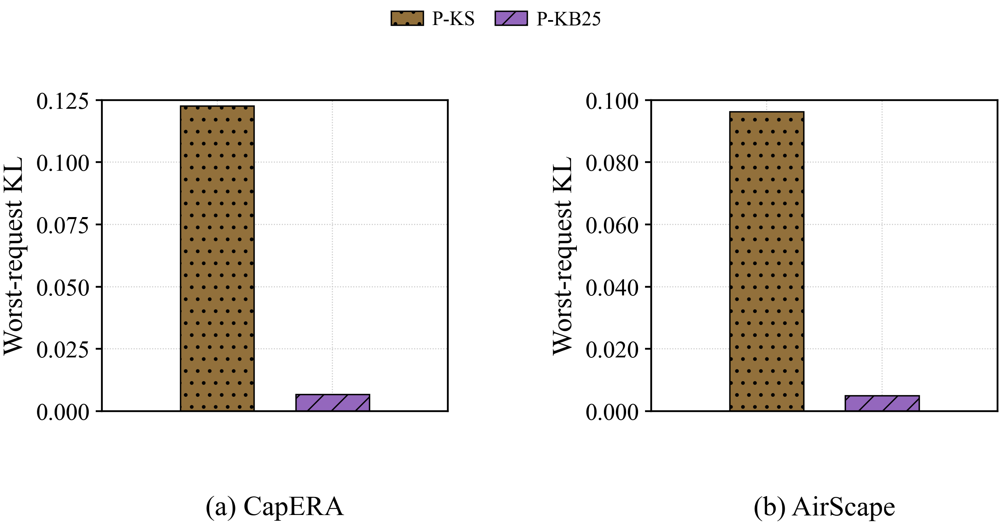

UAV/VLM learning comparisons
P-KS reference audit and real KL-control candidates; all outcomes retained. Definitions and limitations · All metrics · Previous figures
Retained mR (%) — literature — shared time budget

Validation loss — literature — shared time budget

Forget-set KL — original common-reference protocol — literature

Forget-set KL — policy-matched reference — literature

Forget-set KL — original common-reference protocol — bounded

Forget-set KL — policy-matched reference — bounded

Worst-request KL — original common-reference protocol — bounded

Worst-request KL — policy-matched reference — bounded

Forget-set KL — original common-reference protocol — strict400

Worst-request KL — original common-reference protocol — strict400
